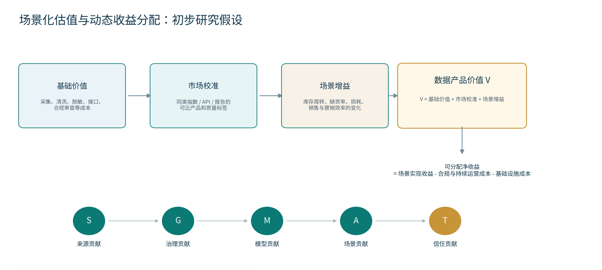

01 · RESEARCH LOGIC
先厘清链条，再讨论价格
对零售数据进行估值，不能从“有多少数据”直接跳到“值多少钱”。研究需要沿着来源、授权、加工、产品和业务收益的链条逐层拆解。

资产识别
订单、商品、会员、客流、库存、履约、营销与公共辅助数据。
权利链
来源合法性、个人授权、合同边界、公共数据运营条件。
产品化
指数、报告、API、模型结果与联合分析服务。
估值
基础成本、市场参照、场景增益与复用能力。
分配
来源、治理、模型、场景与信任五类贡献。
02 · ASSET MAP
零售数据是“人、货、场、链、资”的组合
高价值数据并不只来自会员信息；经营、供应链、履约、客流、营销和公共环境数据共同塑造决策能力。
会员与行为
消费频次、积分、浏览、搜索、到店与偏好标签。
重点：个人信息、用途边界、自动化决策。商品与订单
SKU、交易金额、促销、毛利、退换货与发票。
重点：商业秘密、数据最小必要。流量与商圈
客流、热力、交通、天气、商圈与位置辅助数据。
重点：公共数据开放 / 授权运营。库存与履约
库存、补货、仓配、到货、时效、损耗与退货。
重点：多方共享与数据真实性。营销与归因
曝光、转化路径、投放成本、渠道与 ROI。
重点：归因口径、平台规则。客服与评价
评价文本、投诉、售后与呼叫中心记录。
重点：文本脱敏、个人权益。关键判断可估值、可流通的对象通常不是“原始个人信息集合”，而是经过治理、脱敏、聚合、建模后的数据产品与决策服务。
03 · CASES
公开案例：能确认什么，不能确认什么
第一周只使用官方公开材料能支撑的事实；未公开的价格、合同和分成比例明确保留为后续核验项。
主案例 · 智能补货
全球蛙：全渠道同城会员平台
公开案例显示，其整合采购、供应、销售、服务等全链路数据，提供智能补货、供应链优化与协同服务。
- 可观察价值变量
- 缺货率、库存周转、资金占用、损耗、补货准确率。
- 尚需核验
- 具体收费、合同周期、分成比例和真实 ROI。
辅助案例 · 多源营销
瓴羊“天攻智投”
公开案例显示，其融合户外广告、线下售点、电商行为等数据，结合算法与可信数据空间形成营销服务能力。
- 可观察价值变量
- 客流、覆盖、转化路径、营销效率与模型效果。
- 尚需核验
- 数据、算法、媒体与服务的收入拆分方式。
04 · VALUATION & ALLOCATION
从“数据量”转向“场景增益”
第一周提出一个可验证的初步框架，而不是直接给出统一价格或分成比例。

三段式混合估值
- 基础价值：采集、清洗、脱敏、接口与合规审查成本。
- 市场校准：同类 API、指数、报告或服务的可比产品信息。
- 场景增益：缺货率、周转、损耗、销量与营销效率等业务变化。
五因子贡献分配
先计算可分配净收益，再识别贡献：
S来源
G治理
M模型
A场景
T信任
05 · WEEK 2
下一步：把框架变成可核验的证据
第二周的重点不是再扩大行业范围，而是围绕智能补货把定价、ROI 与权利链补扎实。
补价格机制
收集 3 个可核验的计费口径：订阅、调用、项目制、SaaS 或效果分成。
建 ROI 指标词典
围绕缺货率、周转天数、损耗、库存占用和销量建立统一变量。
补权利链材料
平台规则、供应商协同条款、授权文本与公共数据运营文件。
补学术方法
数据定价、贡献度、合作博弈、隐私计算下价值评估。
来源与证据：政策、法律、公开案例和链接已整理于
research/研究资料与案例索引.xlsx。本页面为第一周研究原型，不替代正式法律或财务意见。